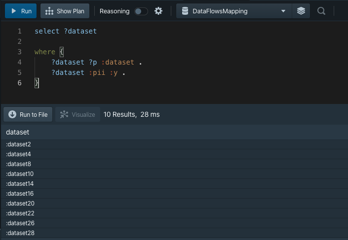
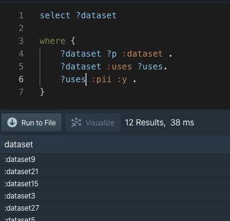

Understanding and visualisation
Examples of how we can query and understand the data, using the same dummy dataset.
Example 1: Understanding connections
What datasets use another dataset
SELECT * WHERE { ?s :usedBy ?o . }

Example 2: Understanding the data
For example: What datasets contain Personal information or have it in their dependencies?
The following example shows how the query can be built up to answer the question.
Step 1: Datasets that contain personal info
select ?dataset
where
{
?dataset ?p :dataset .
?dataset :pii :y .
}

Step 2: Datasets that use datasets that contain personal info
select ?dataset
where
{
?dataset ?p :dataset .
?dataset :uses ?uses.
?uses :pii :y .
}

Step 3: Combination of both queries
select ?dataset ?uses
where
{
{?dataset ?p :dataset .
?dataset :uses ?uses.
?uses :pii :y .}
UNION {
?dataset :pii :y .
}
}